CALENDARIO F1 2026 E ORARI TV
Stagione in corso — aggiornamento: 2 Novembre 2026
Autodromo Nazionale Monza
Un tracciato ridisegnato curva per curva sulla mappa 2026: dalle due chicane al lungo rettilineo posteriore e alla Parabolica.
Seleziona un marker
Clicca un punto numerato sul circuito per i dettagli.
- Marcia consigliata
- —
- Velocità stimata
- —
Tracciato ricostruito come modello 3D illustrativo dalla mappa 2026; non è un rilievo topografico né è in scala. Quote, velocità e marce sono indicative e possono variare.
| # | Data | Gran Premio | PL1 | PL2 | PL3 | Qualifiche | Gara | Diretta TV | Mappa |
|---|---|---|---|---|---|---|---|---|---|
| 1 | 14-16 marzo | Bahrain | 12:30 | 16:00 | 13:30 | 17:00 | 16:00 | Sky | 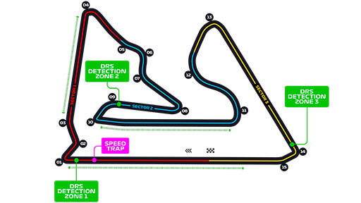 |
| 2 | 21-23 marzo | Arabia Saudita | 14:30 | 18:00 | 14:30 | 18:00 | 18:00 | Sky |  |
| 3 | 4-6 aprile | Australia | 02:30 | 06:00 | 02:30 | 06:00 | 05:00 | Sky | 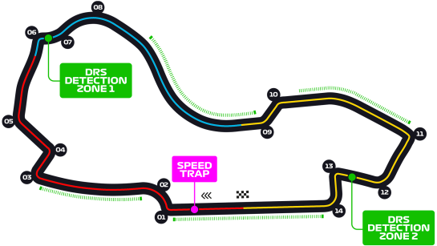 |
| 4 | 18-20 aprile | Giappone | 04:30 | 08:00 | 04:30 | 08:00 | 07:00 | Sky | 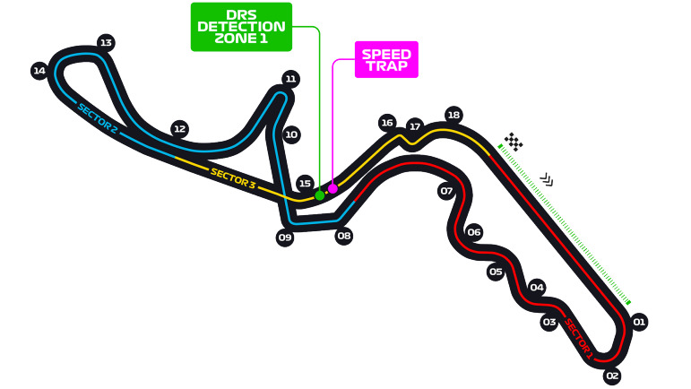 |
| 5 | 25-27 aprile | Cina* | 05:30 | 09:30 | — | 09:00 | 09:00 | Sky, TV8 (solo Sprint) | 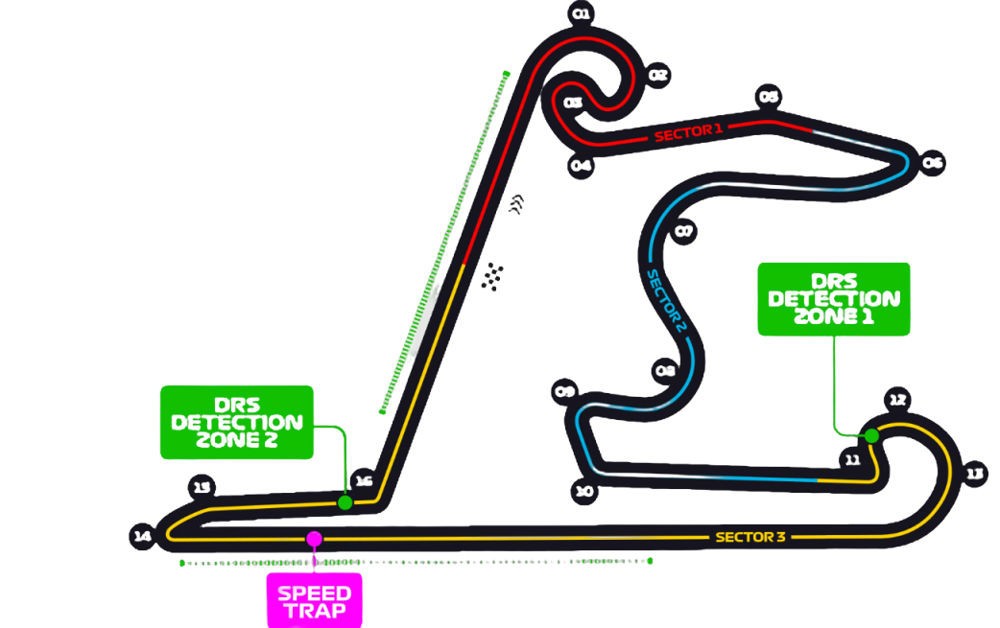 |
| 6 | 9-11 maggio | Miami* | 18:30 | 22:30 | — | 22:00 | 22:00 | Sky, TV8 (solo Sprint) | 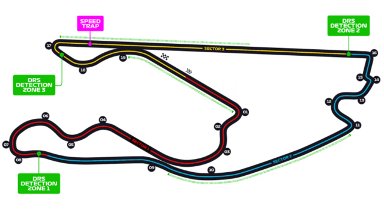 |
| 7 | 23-25 maggio | Monaco | 13:30 | 17:00 | 12:30 | 16:00 | 15:00 | Sky | 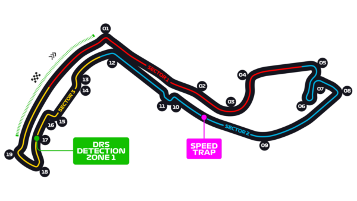 |
| 8 | 6-8 giugno | Spagna | 13:30 | 17:00 | 12:30 | 16:00 | 15:00 | Sky | 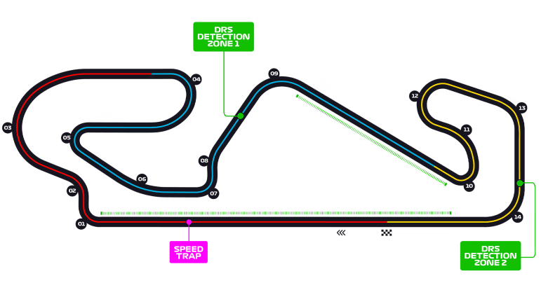 |
| 9 | 13-15 giugno | Canada | 19:30 | 23:00 | 18:30 | 22:00 | 20:00 | Sky | 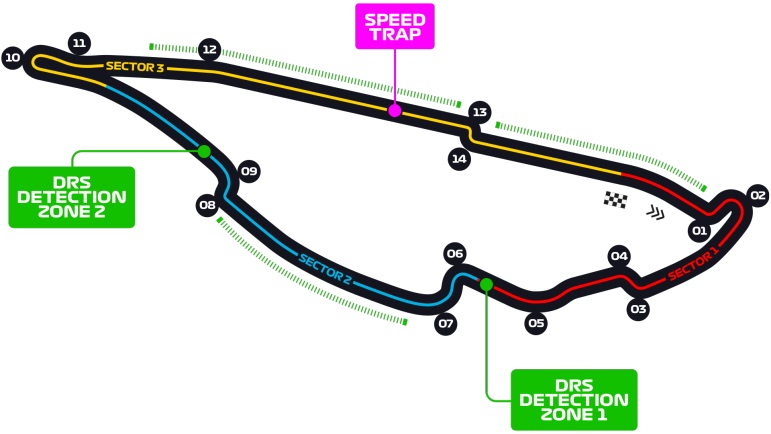 |
| 10 | 27-29 giugno | Austria* | 13:30 | 17:00 | — | 16:00 | 15:00 | Sky, TV8 (solo Sprint) | 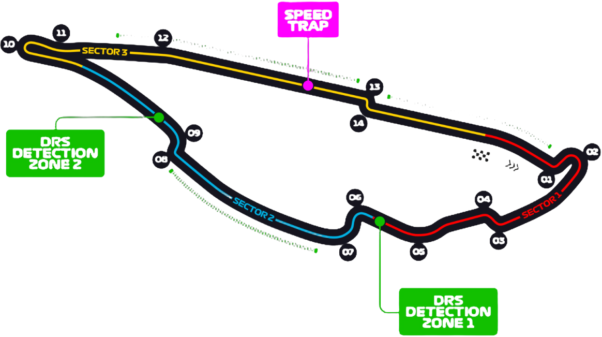 |
| 11 | 4-6 luglio | Gran Bretagna | 13:30 | 17:00 | 12:30 | 16:00 | 16:00 | Sky | 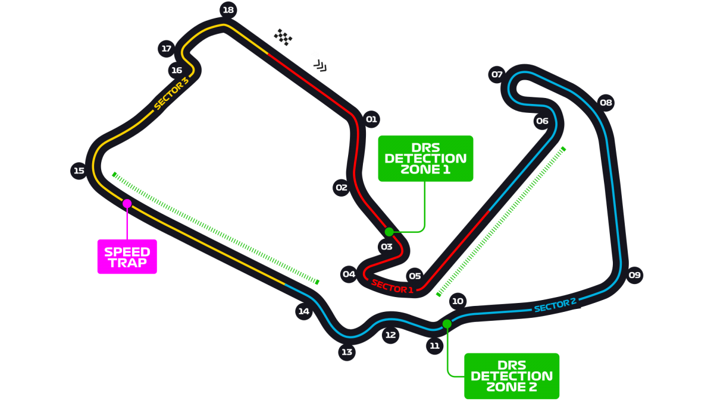 |
| 12 | 25-27 luglio | Belgio | 13:30 | 17:00 | 12:30 | 16:00 | 15:00 | Sky | 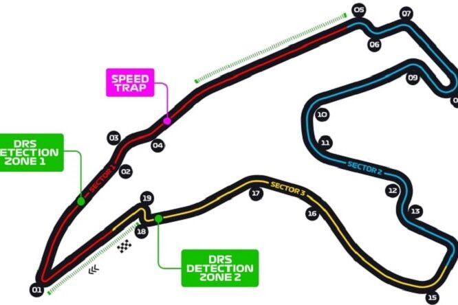 |
| 13 | 1-3 agosto | Ungheria | 13:30 | 17:00 | 12:30 | 16:00 | 15:00 | Sky | 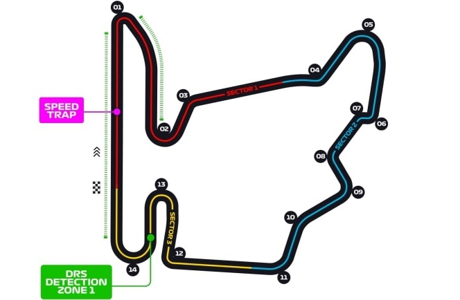 |
| 14 | 29-31 agosto | Paesi Bassi | 13:30 | 17:00 | 12:30 | 16:00 | 15:00 | Sky | 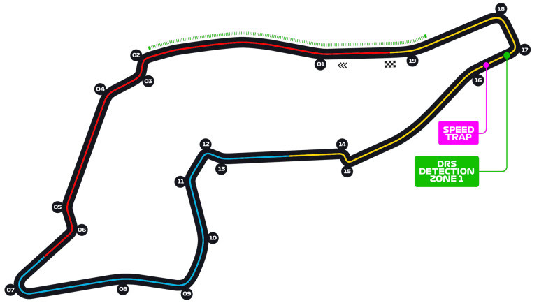 |
| 15 | 5-7 settembre | Italia | 13:30 | 17:00 | 12:30 | 16:00 | 15:00 | Sky, TV8 | 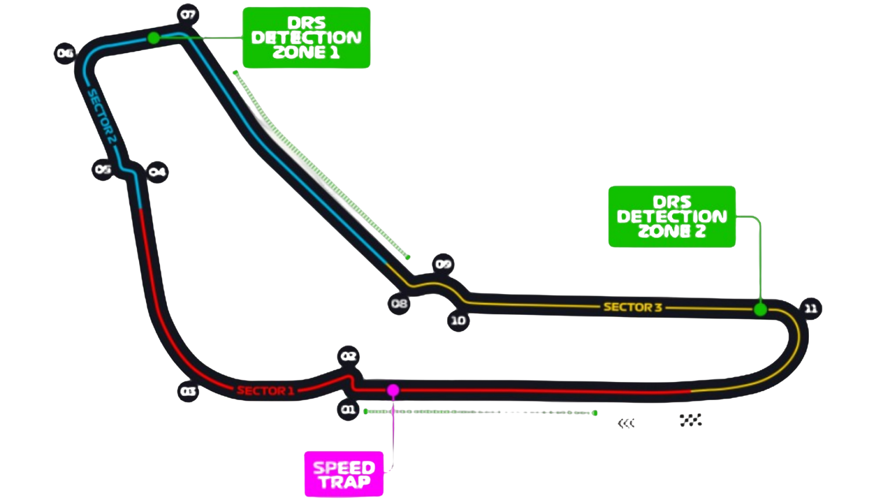 |
| 16 | 19-21 settembre | Singapore | 11:30 | 15:00 | 11:30 | 15:00 | 14:00 | Sky | 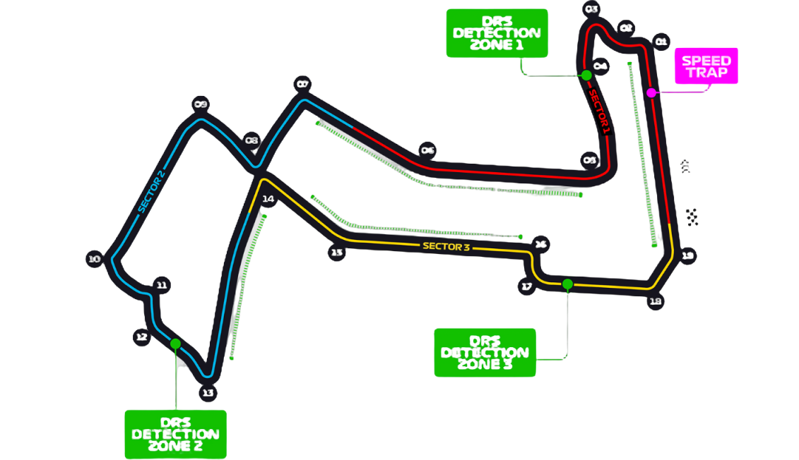 |
| 17 | 26-28 settembre | Azerbaijan | 11:30 | 15:00 | 10:30 | 14:00 | 13:00 | Sky | 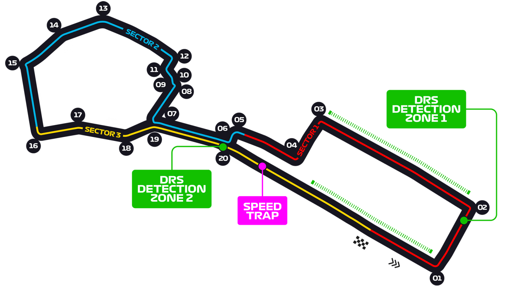 |
| 18 | 17-19 ottobre | Stati Uniti* | 19:30 | 23:30 | — | 00:00 | 21:00 | Sky, TV8 (solo Sprint) | 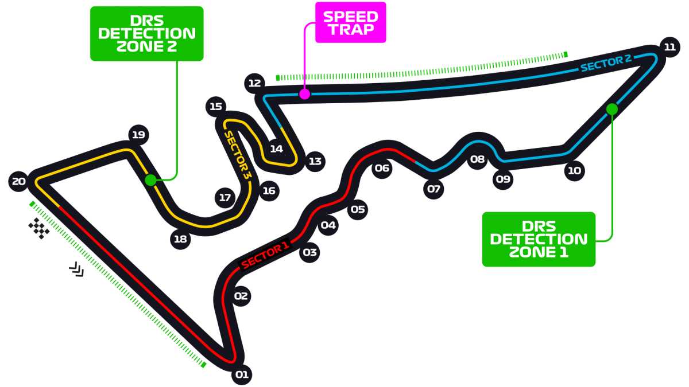 |
| 19 | 24-26 ottobre | Messico | 20:30 | 00:00 | 19:30 | 23:00 | 21:00 | Sky | 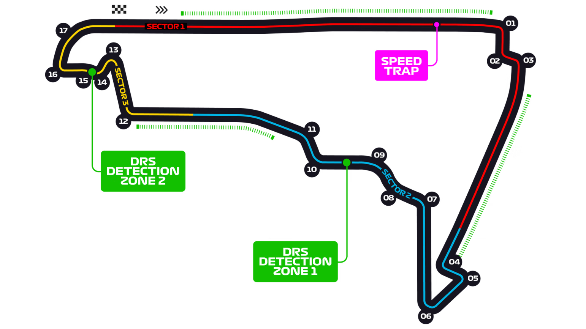 |
| 20 | 1-3 novembre | Brasile* | 15:30 | 19:30 | — | 19:00 | 18:00 | Sky, TV8 (solo Sprint) | 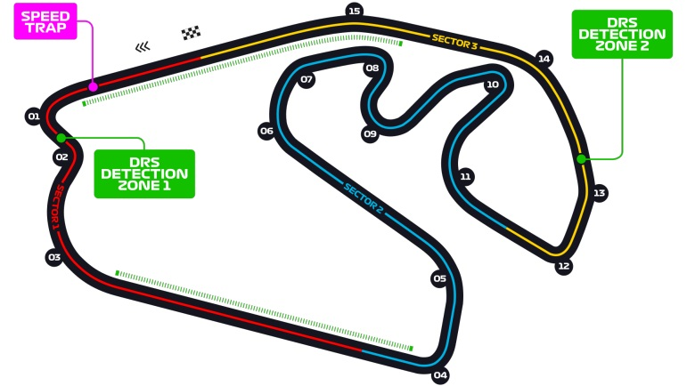 |
| 21 | 21-23 novembre | Las Vegas | 03:30 | 07:00 | 03:30 | 07:00 | 07:00 | Sky | 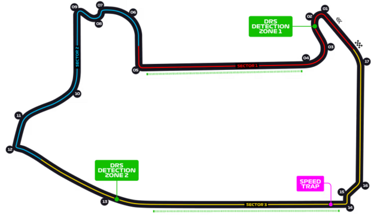 |
| 22 | 28-30 novembre | Qatar* | 14:30 | 18:30 | — | 18:00 | 17:00 | Sky, TV8 (solo Sprint) | 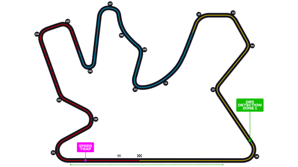 |
| 23 | 5-7 dicembre | Abu Dhabi | 10:30 | 14:00 | 11:30 | 15:00 | 14:00 | Sky |  |
*Weekend Sprint: il format prevede una sessione di prove libere al venerdì, le Qualifiche Sprint al venerdì pomeriggio, la Sprint Race sabato mattina, le Qualifiche del GP sabato pomeriggio e la Gara domenica. In 2026 sono previsti 6 weekend Sprint: Cina, Miami, Austria, Stati Uniti, Brasile e Qatar.
Gara disputata Gara in programma